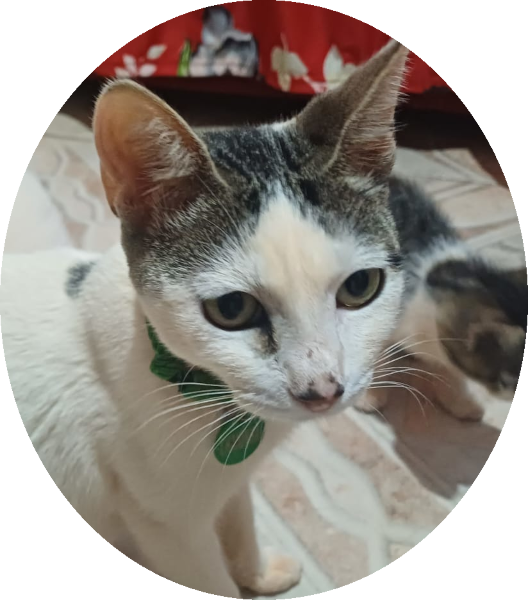
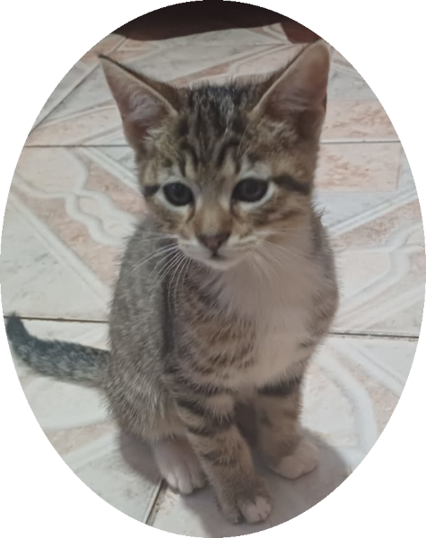
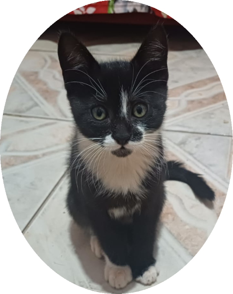
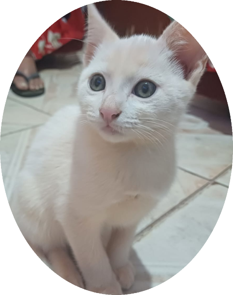
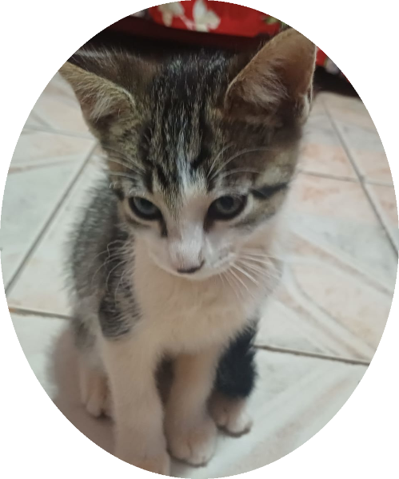

A mamãe desses filhotes é uma gata muito amorosa e protetora, que cuidou dos seus bebês com todo carinho do mundo. Ela tem um temperamento tranquilo, é dócil e super companheira. Ela não está disponível para adoção por ela ser parte da família e continuará sendo cuidada com muito amor. Graças a ela, os filhotes cresceram saudáveis, sociáveis e prontos para encontrar lares cheios de afeto.
Doação Responsável
Mãe
Gato Rajado
Está procurando um novo melhor amigo? Conheça este lindo filhote de gato, cheio de amor e energia!
Informações:
- Nome: (Escolha um nome ou diga "sem nome ainda")
- Sexo: Macho
- Pelagem: Tigrado (rajado), com manchas lindas que parecem as de uma onça!
- Idade: Aproximadamente 2 meses
- Saúde: saudável e já comendo ração
- Muito carinhoso, brincalhão e adora um colo
- Ambientes com carinho, paciência e proteção
Procuramos um adotante que:
- Ofereça um lar seguro e com amor
- Telas nas janelas (ou ambiente seguro)
- Comprometa-se com vacinação e castração futura
Gato Preto
Essa lindinha de pelagem preta está esperando por um lar cheio de carinho e cuidado. Uma verdadeira panterinha em miniatura!
Informações:
- Nome: (Escolha um nome ou diga "sem nome ainda")
- Sexo: Fêmea
- Idade: Aproximadamente 2 meses
- Pelagem: Preta, brilhante e elegante é uma pequena pantera cheia de charme!
- Saúde: saudável e comendo ração seca
- Personalidade: Super dócil, carinhosa e brincalhona. Adora colo e dormir pertinho!
Adoção responsável:
- Ambiente seguro (preferência por casa com telas)
- Compromisso com vacinação e castração futura
- Muito amor e paciência e ela vai retribuir com ronrons e carinho
Gato Branco
Esse gatinho branco, fofo e cheio de personalidade, está procurando um lar cheio de amor!
Informações:
- Nome: (Escolha um nome ou diga "sem nome ainda")
- Sexo: macho
- Idade: aproximadamente 2 meses
- Pelagem: branca, macia e charmosa. Ele está um pouco sujinho na foto, resultado das brincadeiras com os irmãos, mas é saudável e ativo.
- Saúde:comendo ração e muito bem cuidado
- Temperamento: tranquilo, carinhoso e adora companhia. Um filhote meigo, que vai se tornar um grande companheiro.
Requisitos para adoção responsável:
- Ambiente seguro (preferência por locais telados)
- Compromisso com vacinação e castração futura
- Muito amor e paciência
Gato Misto
Este lindo filhote mestiço está em busca de um lar cheio de amor, segurança e afeto. Com sua pelagem única e personalidade encantadora, ele é o tipo de companheiro que traz alegria para qualquer ambiente.
Informações:
- Nome: (Escolha um nome ou diga "sem nome ainda")
- Sexo: macho
- Idade: aproximadamente 2 meses
- Pelagem: mista é uma combinação charmosa de cores que o torna único
- Saúde:ativo, saudável e já se alimentando com ração seca
- Temperamento: brincalhão, sociável e muito carinhoso. Está acostumado ao contato humano e adora atenção.
Requisitos para adoção responsável:
- Ambiente seguro (preferência por locais telados ou protegidos)
- Compromisso com vacinação e castração futura
- Paciência e muito carinho